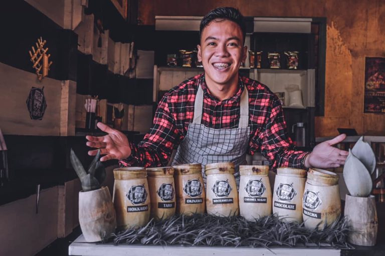

Filipinos usually are fond of refreshing drinks such as the all-time favorite bukojuice and samalamig. But just recently, a new product entered the picture. In a sweep,milk tea captured every Filipino’s taste buds from the North to the South. Where ever yougo, you would see stalls and café offering milk teas of varying flavors. Looking around, we’re attempting to establishing a business where manycustomers will be able to purchase items at reasonable prices and be satisfied. Becausemilktea is so popular and relevant these days, I made the decision to construct a milkteashop in the school. Our milktea products is distinct from the rest, Because I don’t evenreplicate there milktea flavored tea. Originally produced from a various product includingbuko, pandan, dark chocolate, winter melon, matcha, and etc. It will be satisfied thecostumers taste at a very low price.The popularity of Milk Tea in the Philippines is undeniable!
To create the best tasting milk teas and coffee as well as to become the top milk tea store in the Philippines.
– We aim to become one of the top milk tea stores in the country by 3 years, beating out current milk tea stores that are on top of the pyramid such as Serenitea, Bubble Tea and such. – Become internationally known in the near future – To help create a different milk tea drinking experience that would leave customers satisfied and looking forward to more.
 back to main